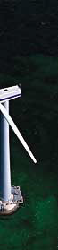

Offshore Wind Conditions

Photograph © 1996
Vestas Wind Systems A/S
 Wind
Conditions at Sea
Wind
Conditions at Sea
The surfaces of seas and lakes are obviously very smooth, thus
the roughness of a seascape is very low
(at constant wind speeds). With increasing wind speeds some of
the energy in the wind is used to build waves, i.e. the roughness
increases. Once the waves have been built up, the roughness decreases
again. We thus have a surface with varying roughness, (just as
you have it in areas covered with more or less snow).
 Generally speaking, however, the roughness
of the water surface is very low, and obstacles to the wind are
few. When doing wind calculations we have to account for islands,
lighthouses etc. just like you would account for upwind obstacles
or changes in roughness on land.
Generally speaking, however, the roughness
of the water surface is very low, and obstacles to the wind are
few. When doing wind calculations we have to account for islands,
lighthouses etc. just like you would account for upwind obstacles
or changes in roughness on land.
Low
Wind Shear Means Lower Hub Height
With low roughness, wind shear
at sea is very low, i.e. the wind speed does not change very
much with changes in the hub height of wind turbines. It may
therefore be most economic to use fairly low towers of perhaps
0.75 times the rotor diameter for wind turbines located at sea,
depending upon local conditions. (Typically towers on land sites
are about the size of the rotor diameter, or taller).
Low
Turbulence Intensity = Longer Lifetime for Turbines
The wind at sea is generally less turbulent
than on land. Wind turbines located at sea may therefore be expected
to have a longer lifetime than land based turbines.
 The low turbulence at sea is primarily due
to the fact that temperature variations between different altitudes
in the atmosphere above the sea are smaller than above land.
Sunlight will penetrate several metres below the sea surface,
whereas on land the radiation from the sun only heats the uppermost
layer of the soil, which thus becomes much warmer.
The low turbulence at sea is primarily due
to the fact that temperature variations between different altitudes
in the atmosphere above the sea are smaller than above land.
Sunlight will penetrate several metres below the sea surface,
whereas on land the radiation from the sun only heats the uppermost
layer of the soil, which thus becomes much warmer.
 Consequently the temperature difference between
the surface and the air will be smaller above sea than above
land. This is the reason for lower turbulence.
Consequently the temperature difference between
the surface and the air will be smaller above sea than above
land. This is the reason for lower turbulence.
Wind
Shade Conditions at Sea
The conventional WAsP model used for onshore wind
modelling is in the process of being modified for offshore wind
conditions, according to its developer, Risø National
Laboratory.
 The different production results obtained
from the experience of the first major offshore wind park at
Vindeby, Denmark,
and the subsequently built wind park at Tunø
Knob, Denmark, has led to new investigations with anemometer
masts being placed offshore in a number of locations in Danish
waters since 1996.
The different production results obtained
from the experience of the first major offshore wind park at
Vindeby, Denmark,
and the subsequently built wind park at Tunø
Knob, Denmark, has led to new investigations with anemometer
masts being placed offshore in a number of locations in Danish
waters since 1996.
 The preliminary results indicate that wind
shade effects from land may be more important, even at distances
up to 20 kilometres, than was previously thought.
The preliminary results indicate that wind
shade effects from land may be more important, even at distances
up to 20 kilometres, than was previously thought.
 On the other hand, it appear that the offshore
wind resource may be some 5 to 10 per cent higher than was previously
estimated.
On the other hand, it appear that the offshore
wind resource may be some 5 to 10 per cent higher than was previously
estimated.

|
Back | Home
| Forward |
© Copyright 1999 Soren Krohn.
All rights reserved.
Updated 6 August 2000
http://www.windpower.org/tour/wres/offshore.htm